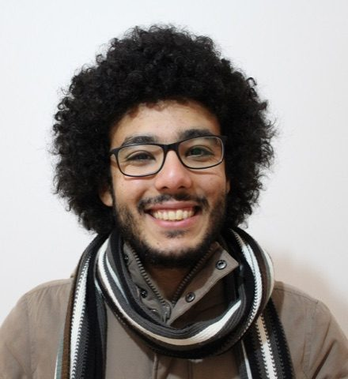

Welcome back.

Hisham Abuella
Muslim | Cellular Systems Engineer
I love creating UIs with Claude, vibe coding with local AI models, and writing about what I learn along the way.
Tune in. What brings you here?
Hisham AbuellaMuslim | Cellular Systems EngineerCalifornia, USA
View CV
10+years in wireless research
5+years in industry
10+technical publications
1US patent
Want everything on one page? Open the full site